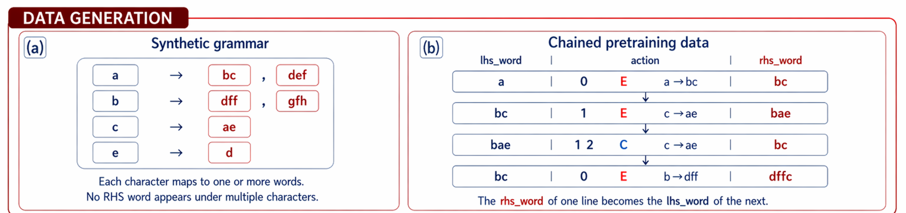
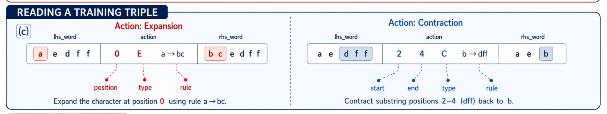
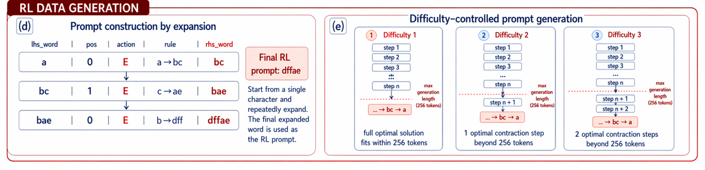
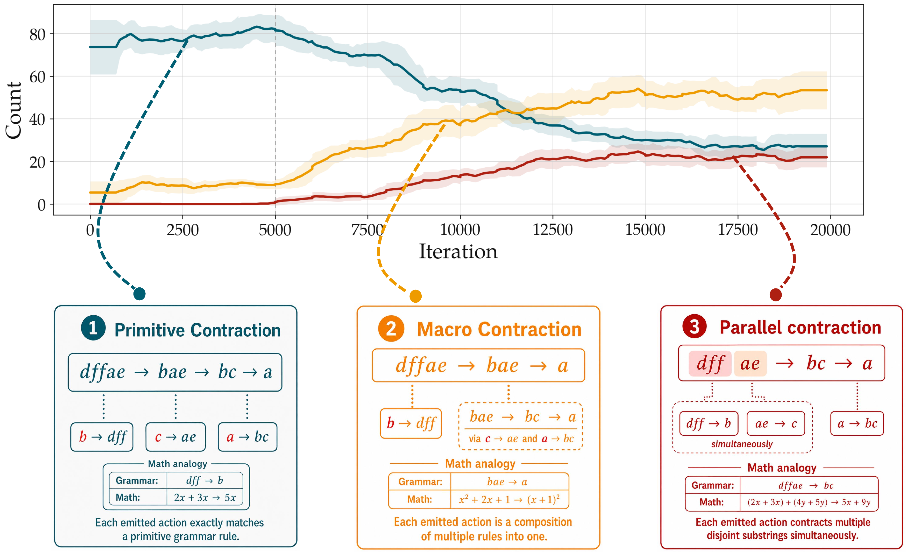
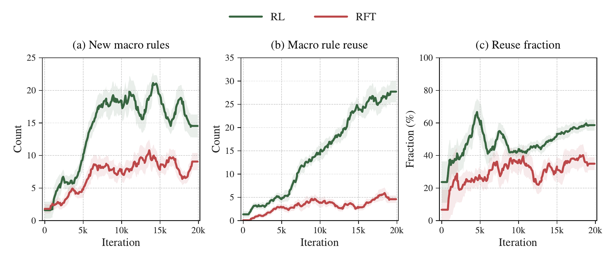
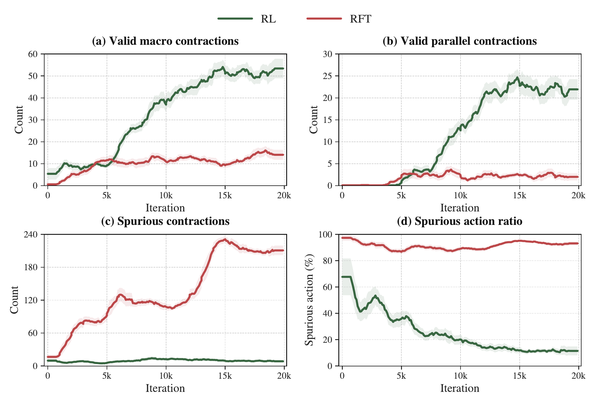
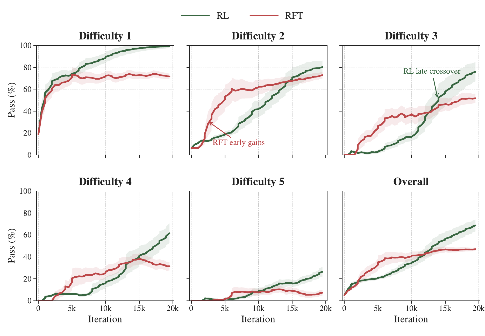
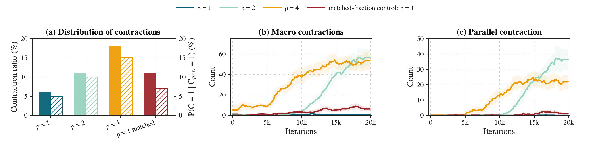

Observable testbed
Every generated rewrite can be classified as primitive, macro, parallel, or spurious.
ICML 2026 Workshop on Compositional Learning
A fully observable rewrite-grammar study showing that reinforcement learning post-training can turn primitive reductions into reusable macro and parallel reasoning procedures.
Core Question
The project answers this in a controlled environment where the grammar, pretraining distribution, and every emitted rewrite are inspectable. A Transformer is pretrained on primitive rewrite chains, then post-trained with only a binary final-answer reward. The resulting traces reveal whether successful solutions use primitive rules, valid composed shortcuts, or invalid rewrites.
Every generated rewrite can be classified as primitive, macro, parallel, or spurious.
RL first strengthens local reductions, then discovers and reuses compressed procedures.
RL solves held-out over-budget problems that the base model rarely reaches at larger pass@k.
RFT explores many shortcut-like rewrites; RL concentrates that space into valid structure.
Method
The environment abstracts step-by-step reasoning into symbol rewrites. Prompts are generated by expansion; solutions require contraction traces that end at the target symbol.



Trace Taxonomy
Primitive contraction
Each emitted action exactly matches a primitive grammar rule.
Findings
Finding 1
Early successful trajectories are dominated by primitive contractions. Around 5k iterations, macro contractions begin to rise; by roughly 12.5k iterations, they overtake primitive contractions, while parallel contractions emerge later.

Finding 2
RL does not merely sample isolated shortcuts. It continues discovering macro rules while increasingly reusing rules found at earlier checkpoints, turning scattered discoveries into stable policy structure.

Finding 3
RFT produces many non-primitive actions, but much of that mass is spurious. GRPO's same-prompt contrast suppresses patterns enriched in failed completions and amplifies valid macro and parallel structure.

Finding 4
RFT improves quickly and then plateaus. RL improves more slowly, but continues climbing after RFT saturates, with the largest advantage on harder held-out problems where primitive-only traces are over budget.

Finding 5
Matching the marginal number of contraction examples is not enough. Higher local contraction weighting produces sustained contraction chains, which later become the substrate that RL can compress and consolidate.

Base Model Check
On held-out over-budget problems, base-model success remains sparse at pass@1024. Buckets 4 and 5 stay at 0%, while RL later makes these kinds of solutions reliably accessible at pass@16.
| k | Overall | B1 | B2 | B3 | B4 | B5 |
|---|---|---|---|---|---|---|
| 64 | 11.25% | 50.00% | 6.25% | 0.00% | 0.00% | 0.00% |
| 256 | 13.75% | 50.00% | 12.50% | 6.25% | 0.00% | 0.00% |
| 1024 | 17.50% | 62.50% | 18.75% | 6.25% | 0.00% | 0.00% |
Paper
The controlled grammar does not claim that every large language model follows this exact taxonomy. It exposes quantities normally hidden in post-training and shows one concrete route by which RL can organize weak procedural ingredients into reusable reasoning structure.